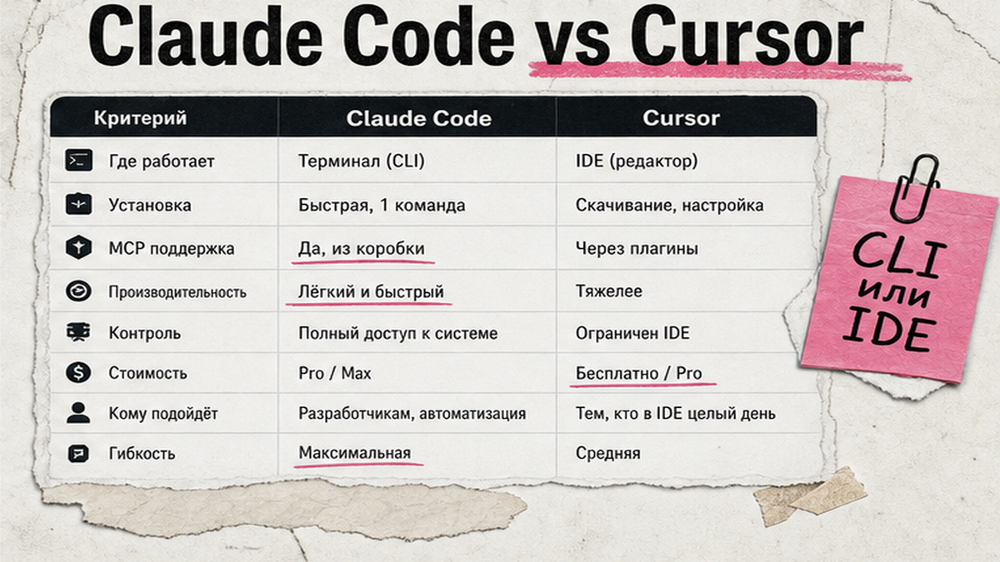
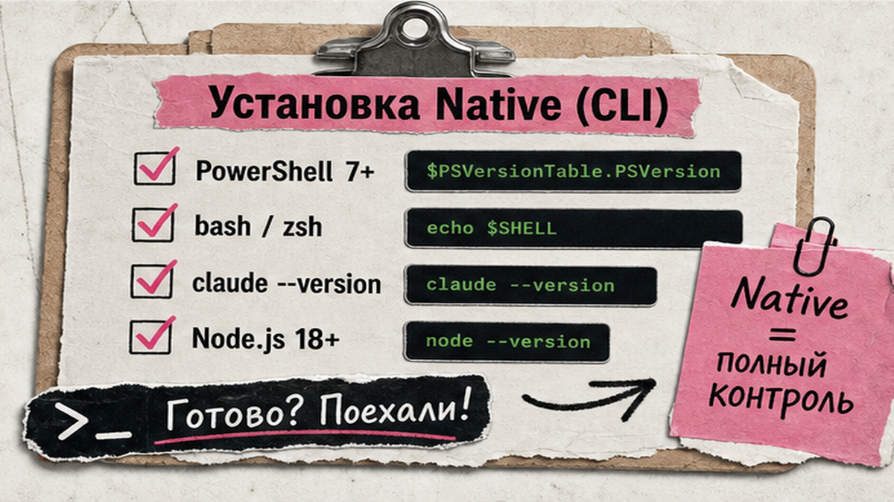
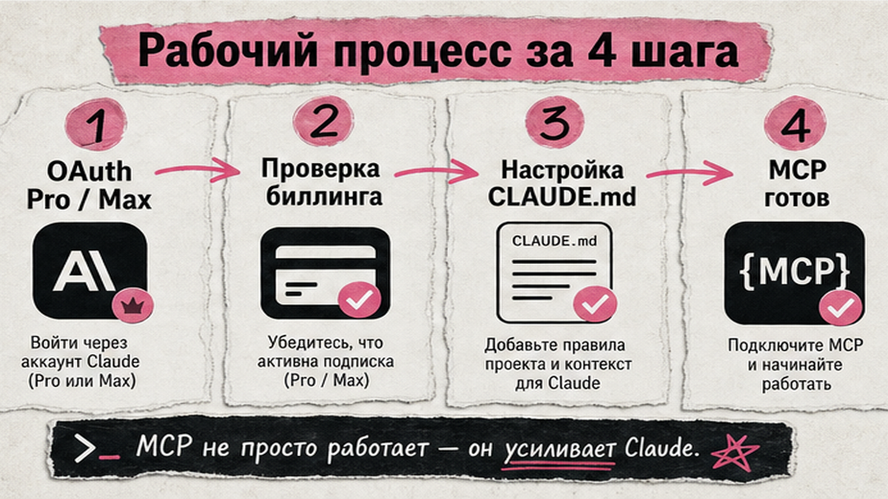

Хотите, чтобы ИИ сам правил файлы в проекте, дергал внешние сервисы и запускал сценарии без ручного копирования в чат? Claude Code - это агент в терминале от Anthropic: он читает код, вызывает инструменты и работает в CI. За 30-45 минут вы пройдете путь install - auth - CLAUDE.md - MCP - hook и проверите первый pipeline. Ниже команды для Windows и macOS, таблица выбора против Cursor и чеклист без лишней теории.
TL;DR / Быстрый инсайт: Claude Code ставится одной командой (native install), требует подписку Pro/Max или API key. MCP (Model Context Protocol) - "розетки" к filesystem, GitHub и webhooks; подключается через claude mcp add или .mcp.json. Hooks в .claude/settings.json - автоправила на события (формат файла, уведомление). Проверка: claude --version, в сессии /mcp и /hooks.
Claude Code - agentic CLI: программа в терминале, которая сама правит файлы и вызывает ваши инструменты. MCP - открытый протокол интеграции AI с сервисами (анонс Anthropic, ноябрь 2024); hooks - триггеры "если агент сделал X, выполни Y". API (Application Programming Interface) здесь - не ручные запросы, а готовые tools, которые агент выбирает сам. Для IDE с похожей логикой см. подключение MCP в Cursor; для оркестрации публикаций - автоматизация n8n с ИИ-агентами.

| Критерий | Claude Code | Cursor |
|---|---|---|
| Где работает | Терминал, скрипты, CI/headless | Редактор кода с чатом и Agent |
| MCP-конфиг | claude mcp add, .mcp.json | .cursor/mcp.json, Tools & MCP |
| Лучше для | Пакетная правка файлов, cron, подготовка артеfactов | Визуальная разработка, рефакторинг в IDE |
| Подписка | Pro/Max/Team/Enterprise; free Claude.ai не дает Code | Отдельный тариф Cursor |
Делайте: Claude Code для скриптов и headless-задач, Cursor для ежедневной работы в редакторе. Не делайте: ставить оба инструмента с десятком одинаковых MCP - дубли путают и вы съедаете лимиты.

Требования по официальной docs: macOS 13+, Windows 10 1809+, Ubuntu 20.04+; от 4 ГБ ОЗУ; x64 или ARM64. На Windows без Git for Windows shell-tool переключится на PowerShell - для bash-команд лучше поставить Git for Windows.
Native install обновляется в фоне; Homebrew/WinGet - вручную. Делайте: native install для ежедневной работы. Не делайте: смешивать npm-обертки с native без необходимости - лишние точки отказа.

Запустите claude в каталоге проекта - откроется browser OAuth. Нужен план Pro ($20/мес), Max 5x ($100/мес), Max 20x ($200/мес), Team или Enterprise; бесплатный Claude.ai Claude Code не включает. Лимиты Pro/Max общие для web и Code.
Если задан ANTHROPIC_API_KEY, аутентификация может идти по API с отдельной биллинг-логикой - для лимита подписки уберите ключ из env на время входа. Доступ из вашего региона зависит от аккаунта Anthropic и оплаты; гарантий не даем - смотрите актуальные условия на claude.ai.
Делайте: один способ оплаты на старте (Pro/Max или API). Не делайте: подключать MCP до успешного входа - без auth серверы не поднимутся.
CLAUDE.md - "память" проекта: тон, стек, запреты. Файл кладут в корень репозитория или .claude/CLAUDE.md; глобально - ~/.claude/CLAUDE.md. Настройки - ~/.claude/settings.json (все проекты) или .claude/settings.json (только репо); локально .claude/settings.local.json.
Минимум для автоматизатора контента: язык ответов, список папок "можно трогать", запрет на rm -rf и публикацию без подтверждения. Команды в сессии: /config, /permissions.
Делайте: 15-20 строк правил вместо романа. Не делайте: копировать чужой CLAUDE.md с GitHub без адаптации под свой стек.
MCP дает агенту tools: чтение файлов, GitHub, HTTP-webhooks к Make/n8n. Scope: local (по умолчанию), project (.mcp.json в репо, нужно одобрение), user (все проекты).
Stdio-сервер filesystem (замените путь на свою папку):
Команда claude mcp add (stdio):
claude mcp add --transport stdio myfs -- npx -y @modelcontextprotocol/server-filesystem /path/to/allowed/dir
Project-scope .mcp.json в корне (команда после -- обязательна):
Пример .mcp.json (project scope):
{ "mcpServers": { "myfs": { "command": "npx", "args": ["-y", "@modelcontextprotocol/server-filesystem", "./content"] } } }
HTTP remote: claude mcp add --transport http myapi https://example.com/mcp. Управление: claude mcp list, claude mcp remove; в сессии /mcp - статус connected и список tools.
| Сервер | Зачем | Когда добавить |
|---|---|---|
| Filesystem | Черновики статей, правки markdown | Первым, на шаге 5 |
| GitHub MCP | PR и issues контент-репо | После filesystem, с PAT в --env |
| HTTP webhook | Триггер Make/n8n после правки | Когда pipeline стабилен |
Делайте: один полный пример (filesystem), остальное - вторым шагом. Не делайте: коммитить секреты в .mcp.json.
Hooks срабатывают на события (PostToolUse, Notification и др.). Типы: command, http, mcp_tool, prompt. Просмотр: /hooks в сессии Claude Code.
Пример PostToolUse - автоформат после правки файла (фрагмент .claude/settings.json):
Пример hook PostToolUse в settings.json:
{ "hooks": { "PostToolUse": [ { "matcher": "Edit|Write", "hooks": [ { "type": "command", "command": "npx prettier --write ${tool_input.file_path}" } ] } ] } }
Hook type mcp_tool вызывает tool уже подключенного MCP без bash - паттерн matcher: mcp__<server>__<tool>. Делайте: один hook на старте (формат или desktop Notification). Не делайте: auto-approve опасных shell-команд на продакшен-аккаунте.
Workflow:
Проверка ОС - native install - claude --version - OAuth Pro/Max - CLAUDE.md - claude mcp add - /mcp OK - hook в settings.json - /hooks OK - тестовый prompt с MCP tool
Чеклист перед headless/CI (10+ пунктов):
Тест: "Прочитай README в ./content и добавь строку в changelog". Агент вызовет MCP filesystem; hook отформатирует или залогирует шаг. Для cron или GitHub Actions используйте non-interactive флаг -p из quickstart: один prompt на stdin, результат в stdout без диалога.
Дальше свяжите выход с Make/n8n - на курсе Make.com и вайбкодинга разбираем цепочки webhook без программирования. Если нужен разбор вашего стека - профиль автора.
Материал проверен: эксперт Артур Хорошев (CEO Maya AI, автор курса по Make.com).
Достоверность данных: команды, тарифы и требования сверены с официальной документацией Anthropic (code.claude.com/docs/ru) на 07.07.2026; LSI-запросы claude code mcp и claude code hooks - по SERP, объемы Вордстат уточняются при подключении MCP Wordstat.
Откройте PowerShell и выполните irm https://claude.ai/install.ps1 | iex. Проверьте claude --version. При command not found перезапустите терминал; для bash-команд установите Git for Windows.
Да: Pro, Max, Team, Enterprise или Console. Бесплатный план Claude.ai Claude Code не включает. Альтернатива - ANTHROPIC_API_KEY с отдельной API-биллинг-логикой.
Claude Code - CLI-агент в терминале и CI; Cursor - IDE с Agent. MCP похож по идее, конфиг разный: claude mcp / .mcp.json против .cursor/mcp.json.
claude mcp add --transport stdio|http с параметрами или .mcp.json в project scope. Проверка: claude mcp list и /mcp в сессии - server connected, tools видны.
В ~/.claude/settings.json или .claude/settings.json проекта. После правки откройте Claude Code и введите /hooks - список активных триггеров.
Hook, который на событии (например PostToolUse) вызывает MCP tool напрямую, без shell-скрипта. Нужен уже подключенный MCP server и matcher mcp__server__tool.
Зависит от доступа к Anthropic, оплаты и аккаунта. Мы не обещаем стабильность; перед оплатой проверьте вход на claude.ai и условия вашего региона.